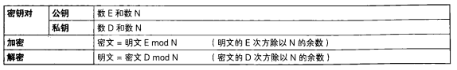

1 | "非对称加密也叫公钥密码: 使用公钥加密, 使用私钥解密" |

在对称密码中，由于加密和解密的密钥是相同的，因此必须向接收者配送密钥。用于解密的密钥必须被配送给接收者，这一问题称为密钥配送问题。如果使用非对称加密也可以称为公钥密码，则无需向接收者配送用于解密的密钥，这样就解决了密钥配送问题。可以说非对称加密是密码学历史上最伟大的发明。
非对称加密中，密钥分为加密密钥和解密密钥两种。发送者用加密密钥对消息进行加密，接收者用解密密钥对密文进行解密。要理解公钥密码，清楚地区分加密密钥和解密密钥是非常重要的。加密密钥是发送者加密时使用的，而解密密钥则是接收者解密时使用的。
仔细思考一下加密密钥和解密密钥的区别，我们可以发现：
- 发送者只需要加密密钥
- 接收者只需要解密密钥
- 解密密钥不可以被窃听者获取
- 加密密钥被窃听者获取也没问题
也就是说，解密密钥从一开始就是由接收者自己保管的，因此只要将加密密钥发给发送者就可以解决密钥配送问题了，而根本不需要配送解密密钥。
非对称加密中，加密密钥一般是公开的。正是由于加密密钥可以任意公开，因此该密钥被称为公钥（publickey）。公钥可以通过邮件直接发送给接收者，也可以刊登在报纸的广告栏上，做成看板放在街上，或者做成网页公开给世界上任何人，而完全不必担心被窃听者窃取。
当然，我们也没有必要非要将公钥公开给全世界所有的人，但至少我们需要将公钥发送给需要使用公钥进行加密的通信对象（也就是给自己发送密文的发送者）。
相对地，解密密钥是绝对不能公开的，这个密钥只能由你自己来使用，因此称为私钥（privatekey）。私钥不可以被别人知道，也不可以将它发送给别人，甚至也不能发送给自己的通信对象。
公钥和私钥是一一对应的，一对公钥和私钥统称为密钥对（keypair）。由公钥进行加密的密文，必须使用与该公钥配对的私钥才能够解密。密钥对中的两个密钥之间具有非常密切的关系(数学上的关系)一一因此公钥和私钥是不能分别单独生成的。
公钥密码的使用者需要生成一个包括公钥和私钥的密钥对，其中公钥会被发送给别人，而私钥则仅供自己使用。稍后我们将具体尝试生成一个密钥对。
4.1 非对称加密通信流程
下面我们来看一看使用公钥密码的通信流程。和以前一样、我们还是假设Alice要给Bob发送一条消息，Alice是发送者，Bob是接收者，而这一次窃听者Eve依然能够窃所到他们之间的通信内容。
在公非对称加密通信中，通信过程是由接收者Bob来启动的。
Bob生成一个包含公钥和私钥的密钥对。
私钥由Bob自行妥善保管。
Bob将自己的公钥发送给Alicea
Bob的公钥被窃听者Eve截获也没关系。
将公钥发送给Alice，表示Bob请Alice用这个公钥对消息进行加密并发送给他。
Alice用Bob的公钥对消息进行加密。
加密后的消息只有用Bob的私钥才能够解密。
虽然Alice拥有Bob的公钥，但用Bob的公钥是无法对密文进行解密的。
Alice将密文发送给Bobo
密文被窃听者Eve截获也没关系。Eve可能拥有Bob的公钥，但是用Bob的公钥是无法进行解密的。
Bob用自己的私钥对密文进行解密。
请参考下图, 看一看在Alice和Bob之间到底传输了哪些信息。其实它们之间所传输的信息只有两个：Bob的公钥以及用Bob的公钥加密的密文。由于Bob的私钥没有出现在通信内容中，因此窃听者Eve无法对密文进行解密。

窃听者Eve可能拥有Bob的公钥，但是Bob的公钥只是加密密钥，而不是解密密钥，因此窃听者Eve就无法完成解密操作。
4.2 RSA
RSA是一种非对称加密算法，它的名字是由它的三位开发者，即RonRivest、AdiShamir和LeonardAdleman 的姓氏的首字母组成的（Rivest-Shamir-Leonard）。
RSA可以被用于非对称加密和数字签名.
1983年，RSA公司为RSA算法在美国取得了专利，但现在该专利已经过期。
4.2.1 RSA加密
在RSA中，明文、密钥和密文都是数字。RSA的加密过程可以用下列公式来表达，如下。
密文=明文 ^ E mod N（RSA加密）
也就是说，RSA的密文是对代表明文的数字的E次方求modN的结果。换句话说，就是将明文自己做E次乘法，然后将其结果除以N求余数，这个余数就是密文。
对，就这么简单。仅仅对明文进行乘方运算并求mod即可，这就是整个加密的过程。在对称密码中，出现了很多复杂的函数和操作，就像做炒鸡蛋一样将比特序列挪来挪去，还要进行XOR(按位异或)等运算才能完成，但RSA却不同，它非常简洁。
对了，加密公式中出现的两个数一一一E和N，到底都是什么数呢？RSA的加密是求明文的E次方modN，因此只要知道E和N这两个数，任何人都可以完成加密的运算。所以说，E和N是RSA加密的密钥，也就是说，E和N的组合就是公钥。
不过，E和N并不是随便什么数都可以的，它们是经过严密计算得出的。顺便说一句，E是加密（Encryption）的首字母，N是数字（Number)的首字母。
有一个很容易引起误解的地方需要大家注意一一E和N这两个数并不是密钥对（公钥和私钥的密钥对）。E和N两个数才组成了一个公钥，因此我们一般会写成 “公钥是(E，N)” 或者 “公钥是{E, N}” 这样的形式，将E和N用括号括起来。
现在大家应该已经知道，RSA的加密就是 “求E次方的modN”，接下来我们来看看RSA的解密。
4.2.2 RSA解密
RSA的解密和加密一样简单，可以用下面的公式来表达：
明文=密文^D mod N（RSA解密）
也就是说，对表示密文的数字的D次方求modN就可以得到明文。换句话说，将密文自己做D次乘法，再对其结果除以N求余数，就可以得到明文。
这里所使用的数字N和加密时使用的数字N是相同的。数D和数N组合起来就是RSA的解密密钥，因此D和N的组合就是私钥。只有知道D和N两个数的人才能够完成解密的运算。
大家应该已经注意到，在RSA中，加密和解密的形式是相同的。加密是求 “E次方的mod N”，而解密则是求 “D次方的modN”，这真是太美妙了。
当然，D也并不是随便什么数都可以的，作为解密密钥的D，和数字E有着相当紧密的联系。否则，用E加密的结果可以用D来解密这样的机制是无法实现的。
顺便说一句，D是解密〈Decryption）的首字母，N是数字（Number）的首字母。
我们将上面讲过的内容整理一下，如下表所示。

RSA的加密和解密

4.3 ECC椭圆曲线
概念
椭圆曲线密码学（英语：Elliptic curve cryptography，缩写为 ECC），一种建立公开密钥加密的算法，基于椭圆曲线数学。椭圆曲线在密码学中的使用是在1985年由Neal Koblitz和Victor Miller分别独立提出的。
ECC的主要优势是在某些情况下它比其他的方法使用更小的密钥——比如RSA加密算法——提供相当的或更高等级的安全。
椭圆曲线密码学的许多形式有稍微的不同，所有的都依赖于被广泛承认的解决椭圆曲线离散对数问题的困难性上。与传统的基于大质数因子分解困难性的加密方法不同，ECC通过椭圆曲线方程式的性质产生密钥。
ECC 164位的密钥产生的一个安全级相当于RSA 1024位密钥提供的保密强度，而且计算量较小，处理速度更快，存储空间和传输带宽占用较少。目前我国
居民二代身份证正在使用 256 位的椭圆曲线密码，虚拟货币比特币也选择ECC作为加密算法。具体算法详解参考：
数学原理
不管是RSA还是ECC或者其它，公钥加密算法都是依赖于某个正向计算很简单（多项式时间复杂度），而逆向计算很难（指数级时间复杂度）的数学问题。
椭圆曲线依赖的数学难题是:
k为正整数，P是椭圆曲线上的点（称为基点）, k*P=Q , 已知Q和P，很难计算出k
4.4 非对称加密解惑
非对称加密比对称加密机密性更高吗?
这个问题无法回答, 以为机密性高低是根据秘钥长度而变化的
采用1024bit 秘钥长度的非对称加密, 和采用128bit秘钥长度的对称加密中, 是秘钥更长的非对称加密更安全吗?
不是。
非对称加密的密钥长度不能与对称加密的密钥长度进行直接比较。下表是一张密钥长度的比较表（本表摘自《应用密码学》），根据这张表我们可以看出，1024比特的公钥密码与128比特的对称密码相比，反而是128比特的对称密码抵御暴力破解的能力更强。
| 对称加密秘钥长度 | 非对称加密秘钥长度 |
|---|---|
| 128 比特 | 2304 比特 |
| 112 比特 | 1792 比特 |
| 80 比特 | 768 比特 |
| 64 比特 | 512 比特 |
| 56 比特 | 384 比特 |
有了非对称加密， 以后对称加密会被替代吗？
不会。
一般来说，在采用具备同等机密性的密钥长度的情况下，非对称加密的处理速度只有对称加密的几百分之一。因此，非对称加密并不适合用来对很长的消息内容进行加密。根据目的的不同，还可能会配合使用对称加密和非对称加密，例如，混合密码系统就是将这两种密码组合而成的。